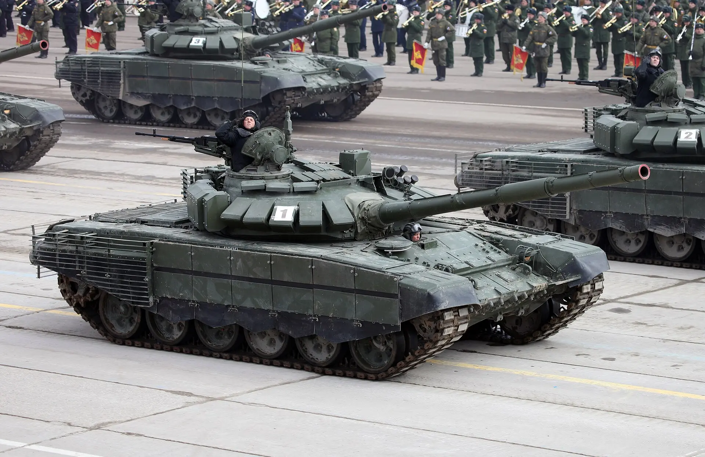

| T-72 | |
|---|---|
|
 |
Datos generalesPaís: Unión Soviética Año: 1973 Tripulación: 3 |
EspecificacionesPeso: 41 toneladas Motor: V-46-6, diésel V12, 780 hp Velocidad máxima: 60 km/h |
|
ArmamentoCañón principal: 2A46 de 125 mm Ametralladoras: 1 × PKT de 7,62 mm y 1 × NSV de 12,7 mm Municion empleada
|
|
El T-72 fue un tanque de batalla principal desarrollado por la Unión Soviética durante la década de 1960 como una alternativa más sencilla y económica al T-64. Su diseño buscaba combinar movilidad, protección y potencia de fuego con una construcción adecuada para la producción a gran escala.
El desarrollo del T-72 estuvo relacionado con la experiencia obtenida durante la producción del T-64. Aunque ambos vehículos compartían algunas características, el T-72 utilizó una arquitectura mecánica más sencilla y un motor derivado de la familia V-2 utilizada en anteriores tanques soviéticos.
Una de sus principales características fue la incorporación de un cargador automático para el cañón de 125 mm. Esto permitió reducir la tripulación a tres personas y mantener una silueta relativamente baja.
La producción del T-72 comenzó a finales de la década de 1960 en la Unión Soviética. La principal fábrica encargada de su producción fue Uralvagonzavod, ubicada en Nizhni Taguil. El modelo fue fabricado durante décadas y se convirtió en uno de los tanques más numerosos de la era de la Guerra Fría.
Su diseño relativamente sencillo facilitó la fabricación y el mantenimiento. Además, numerosas versiones fueron producidas para las fuerzas soviéticas, los países del Pacto de Varsovia y otros operadores extranjeros.
El T-72 comenzó a entrar en servicio durante la década de 1970. Aunque inicialmente estuvo destinado principalmente a las fuerzas soviéticas y a países aliados, posteriormente fue exportado a numerosos países.
El T-72 tuvo una de sus primeras experiencias importantes en combate durante la Guerra del Líbano de 1982, donde unidades sirias equipadas con T-72 participaron en enfrentamientos contra fuerzas israelíes.
El T-72 y sus diferentes variantes participaron en numerosos conflictos: